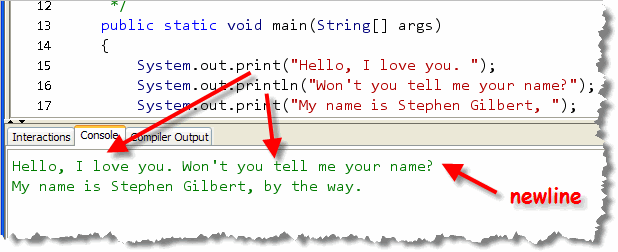
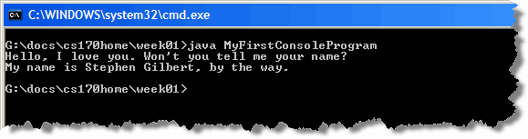
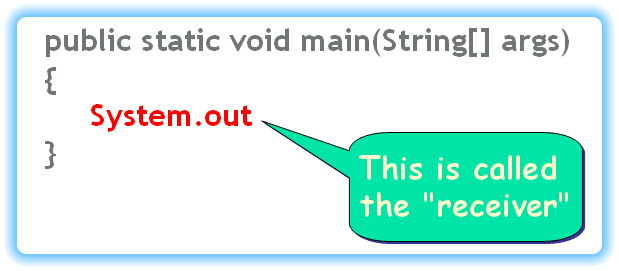
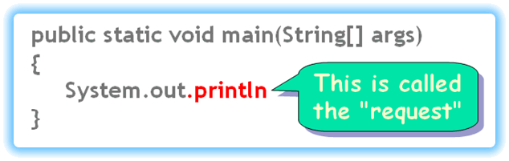
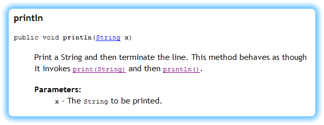

In 1970, a pair of young researchers at Bell Labs in New Jersey—Ken Thompson and Dennis Ritchie—developed a portable operating system for a new generation of mini-computers just coming on the market. To help simplify the development of Unix, Ritchie created a new programming language named C (so named because its predecessor was B).
Both Unix and C have had enormous impact on the field of computing. Many of today's most important language are based on C, including Java, which still uses the original syntax designed by Ritchie.
Ritchie and Thompson jointly received the ACM Turing Award—the
computing profession’s highest honor—in 1983. In 1999,
they jointly received the National Medal of Technology of 1998
from President Bill Clinton for co-inventing the UNIX operating
system and the C programming language, "...which together have
led to enormous advances in computer hardware, software, and
networking systems and stimulated growth of an entire industry,
thereby enhancing American leadership in the Information Age."
 In his book, The C Programming Language, Richie offers
this advice on the first page.
In his book, The C Programming Language, Richie offers
this advice on the first page.
The only way to learn a new programming language is by writing programs in it. The first program to write is the same for all languages:
Print the words
hello, world
This is the big hurdle; to leap over it you have to be able to create the program text somewhere, compile it successfully, load it, run it, and find out where the output went. With these mechanical details mastered, everything else is comparatively easy.
That advice was followed by the "hello world" program, which all C programmers learned. While Java is different than C, the underlying advice still holds: your first programs should be as simple as possible to become fluent in the language.
Let's pick up where we left off in the last chapter
by looking at the PrintStream
class which is used for output in traditional console
programs. Then, we'll look at most common type of statement,
the output statement, focusing on those inside the
main() method of MyFirstConsoleProgram.
Traditional Input and Output
Today, most programs use a Graphical User Interface (GUI) and
"widgets" like text-fields, labels, checkboxes and buttons
to communicate with the user, like the Preferences dialog used in DrJava:
 In an object-oriented program, those widgets are usually
represented by different kinds of objects.
Programs haven't always been organized like this, however.
In an object-oriented program, those widgets are usually
represented by different kinds of objects.
Programs haven't always been organized like this, however.
Traditional Programs
 Instead of being arranged around creating an object and sending
it messages, traditional programs, like those you'd write
in Pascal, Basic, FORTRAN or C, are arranged around following
a sequential set of instructions that produce the desired output.
Instead of being arranged around creating an object and sending
it messages, traditional programs, like those you'd write
in Pascal, Basic, FORTRAN or C, are arranged around following
a sequential set of instructions that produce the desired output.
To display output in a traditional language you:
- first find the particular command that your programming
system language uses (like
Writein Pascal,PRINTin BASIC, orprintfin C) - then, you type that command into your source code, along with the information you want the computer to display.
When you run a traditional console program, the computer then "prints" the desired information on your computer's screen, usually in a "text-mode" window.
 In these traditional programs, the console or
terminal acts almost exactly as if you were printing on
an old-fashioned Teletype terminal, the sort that prints on
fan-fold perforated paper, like the one shown in this advertisement.
In these traditional programs, the console or
terminal acts almost exactly as if you were printing on
an old-fashioned Teletype terminal, the sort that prints on
fan-fold perforated paper, like the one shown in this advertisement.
On such a printer, when a line of output is finished, the paper scrolls up to allow the printing mechanism to print on a fresh line. When using this sort of input and output (dubbed "console I/O") on a video monitor, each line of text automatically starts to display on the following line after each line is finished printing.
When a line of output is displayed on the last line of the terminal window, the entire image "scrolls" up to provide a clean line to print the next output. In practice, this looks kind of like a printing teletype terminals, so this scrolling output has been dubbed the "glass teletype."
Java's Glass Teletype Object: System.out
 As I mentioned earlier, Java is an object-oriented language, and, as such, it has no
"commands" for doing input and output at all.
Object-oriented languages are languages that support the bundling
of data and instructions into a single entity—called an
object—and then sending messages to that
object asking it to perform certain operations.
As I mentioned earlier, Java is an object-oriented language, and, as such, it has no
"commands" for doing input and output at all.
Object-oriented languages are languages that support the bundling
of data and instructions into a single entity—called an
object—and then sending messages to that
object asking it to perform certain operations.
Object-oriented programs are organized like a community of objects; each object has various abilities, and each object can interact with the user and with each other somewhat independently.
As luck (and foresight)
would have it, the Java class libraries come complete with a
predefined object that mimics this old-fashioned glass teletype. The name of this
object is out.
That’s right, out. But seeing as it's a traditionalist sort of object, to get it to respond, you'll need to use its fully-qualified name:
To ask the System.out object to carry out an
action, you need to call one of its methods.
Its two most important methods (at least to us) are print
and println, both of which
are used in your MyFirstConsoleProgram:

print and println
These two methods are used to display output on the system
console. To use either print or
println, you type the information that you
want to be printed inside parentheses, following the
method name. This is called passing the method a parameter
(or argument). The information can be a number, like
3 or 5.7, or it can be text (provided you put double-quotes
around the text, like we've done in our program).
The parameter or argument that you pass is converted to a "human-readable"
text format, called a String, and then displayed on the program's
console window by the System.out object.
As you can see, print is called on lines 15 and 17, while
println is called on lines 16 and 18.
The difference between print and println,
(usually pronounced print-line),
is that println adds a newline to the
end of its output, so that the next time you use
print or println, the new output
appears at the beginning of the following line.

This means that the output produced by line 16 appears on
the same line, but following the output from line
15, while the output on line 17 starts on a completely
new line, since line 16 uses the println
method, which adds a newline after printing its
parameter:
You can also call
println() with no arguments, if you just want to
add a "blank" line on the console.
The System Console Window
When you use the Java's standard console object, instead of using a graphical console window, both input an output appear inside your operating system's console window, or the window that your IDE uses for console input and output.
Your operating system's console is the command shell or terminal window
that you used to start the program from the command line. Here's what that
looks like in Windows, using the Windows shell:

In DrJava, the standard operating system input and ouput appears in a special console pane that appears below the definitions pane. If you like, you can "detach" all of the "tabbed panes" into their own, free-standing window, by using the Tabbed Panes option on the Edit menu. If you do that, then the DrJava console looks like this:
Talking to Objects
While it might not seem that you've accomplished a lot, printing a couple of lines of text to a console window, what you've really done is learned how to talk to objects.
 You'll follow exactly the same pattern with every object
you encounter from here on out, no matter how complex
your programs get. By starting with the simplest possible programs,
you'll gain fluency so you'll be comfortable using the Java language
to create more sophisticate programs later.
You'll follow exactly the same pattern with every object
you encounter from here on out, no matter how complex
your programs get. By starting with the simplest possible programs,
you'll gain fluency so you'll be comfortable using the Java language
to create more sophisticate programs later.
You communicate with objects, like System.out
by sending them messages, which is simply another way of
saying calling (or invoking) a method.
To see how this works, let's examine a hypothetical program,
named HiMom, and see how it sends the
println message to the PrintStream object
named out, which is automatically created when your
program starts.
Just like MyFirstConsoleProgram, HiMom uses its,
main method to perform its output, and, since
actions can only occur inside a method,
we'll have to send our message inside the
main method.
The main method is called
automatically whenever you "run" a Java class file using the
Java interpreter.
Step 1: Who? (The Receiver)
When your program first starts up, the Java Virtual Machine that
loads your program automatically loads a group of
classes, (called the java.lang package). This package
includes classes that you'll commonly use in every program,
with names like String and System.
Once it's loaded, the System class automatically
creates several objects that you can use for input and output.
One of these objects, which can be used to print information
on the console window, is named out. Because
this object is inside the System class,
we have include the class name when we refer to it as
System.out.
Even though the out object is physically stored
inside the System class, it actually is an instance
of a different class, the class named PrintStream. Later
on you'll learn more about the PrintStream
class and what it can do. For right now, just notice that you have
an object, System.out, that you can send messages to.
When you send a message to an object, that object is called the receiver of the message. Whenever you send a message, you start by specifying the receiver, like this:

Always start by asking "what object is going to carry out the action?"Step 2: What? (The Request)
After you've specified the receiver of the message, you have to tell the object what you want it to do. You do that by using the name of the method, (this is called the request), followed by parentheses.

Separate the message name from the receiver with a dot (.), just like we used the dot to separate the class name from the object name. To find out what messages you can send to an object, you'll
have to look up the online Javadoc documentation online.
You'll learn how to find and use the online Javadocs a little later.
For right now, here is the documentation for the PrintStream
println method.

Step 3: Parameters or Arguments
When you send a message to an object, the object may require additional information before it can carry out your request. This additional information is specified in the Java documentation as the method's parameter(s) or argument(s).
If you look at the documentation for the println
method, you'll see that it requires a single String
parameter. We haven't yet formally met the String
class yet. For right now, think of a String as
"text between double-quotes".
Simply change your code like this, and everything will compile
and work as expected. (Don't forget the closing quotes, and
the semicolon as well).

Other Parameter Types
In addition to text parameters, methods often require you to pass
numbers as well. If the documentation for a parameter uses
the word int, then you need to supply a plain
whole number, without quotes or a decimal point,
like this:.
System.out.println(123);
Notice that there are no quotation marks around the literal numeric value 123.
If the documentation for a parameter uses
the word double, then you can use a whole number,
(like you did for int), but you can also supply a
number that has a decimal point, like this:
System.out.println(123.75);
As mentioned earlier, the print and println
methods are a little unusual in that you can pass any type
of parameter, String or numeric. Most methods you'll
use will specify a particular type of parameter.
Adding a Static Import Statement
Writing System.out.println() each time you want
to print a line of text to the console is kind of tedious,
if for no other reason than that it requires no much typing.
You can reduce that extra typing considerably by adding a static
import to the top of your class, (along with the
any other imports).
If you add this line:
then you can write out.println() instead of
System.out.println(). If you have only a single line
that's not a great savings, but it does add up when the print
statements multiply.

Console Output Summary
- Dennis Ritchie invented the C language to simply the development of Unix. Java (and many other important languages) still use the C-style syntax that Ritchie developed.
- Following Dennis Ritchie's advice, while learning a new language, we want to write the simplest possible programs to help us concentrate on the fundamentals. Ritchie's first program simply printed "hello, world" on the screen.
- Traditional console programs use a sequence of commands to display output and do other operations.
- Object-oriented languages consist of a community of objects interacting with each other. To display output in an object-oriented program, you make a request to an output object.
- The Java class library contains an output object named
System.outthat is automatically created when your program is run. - You can ask
System.outto display data by sending it theprintandprintlnmessages. - When interacting with objects, the receiver is the object that carries out your request, the request is the name of the method that you want it to perform, and the parameters or arguments are additional pieces of data that you supply to customize the way that the object carries out your request.
- The
printmethod displays its parameter on the console, while theprintlnmethod adds a newline following its output, so the next output appears on the next line. - You can shorten the name of the
System.outobject when writing your code to simplyoutby adding astatic importstatement at the beginning of your file.